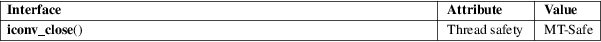

iconv_close − deallocate descriptor for character set conversion
Standard C library (libc, −lc)
#include <iconv.h>
int iconv_close(iconv_t cd);
The iconv_close() function deallocates a conversion descriptor cd previously allocated using iconv_open(3).
On success, iconv_close() returns 0; otherwise, it returns −1 and sets errno to indicate the error.
For an explanation of the terms used in this section, see attributes(7).

POSIX.1-2008.
glibc 2.1. POSIX.1-2001.
iconv(3), iconv_open(3)